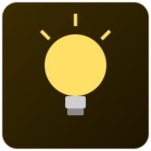
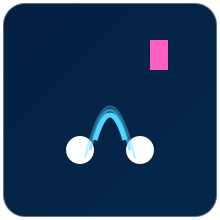
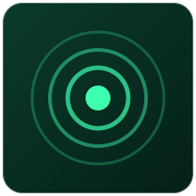
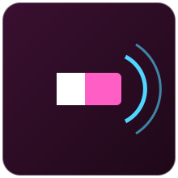
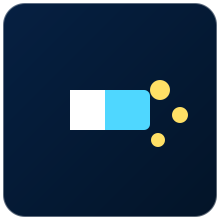

Sensores que percebem luz, presença e distância de objetos, fundamentais para automação, segurança e detecção de peças em linhas de produção.
Nenhum sensor encontrado com esse filtro.

O LDR (Light Dependent Resistor) é um resistor cuja resistência elétrica diminui conforme a quantidade de luz incidente aumenta.
É fabricado com um material fotossensível (geralmente sulfeto de cádmio) cuja resistência varia de forma não linear com a luminosidade: no escuro sua resistência pode chegar a centenas de kΩ, enquanto sob luz forte cai para poucas centenas de ohms. Ligado em um divisor de tensão, permite ler essa variação como uma tensão analógica.
| Faixa de resistência | Aprox. 200 Ω (luz forte) a 1 MΩ (escuro) |
|---|---|
| Tensão de alimentação | Depende do circuito divisor de tensão utilizado |
| Tempo de resposta | Relativamente lento (dezenas de ms) |
Analógico
Em um poste de iluminação automatizado, o LDR lido por uma entrada analógica do ESP32 aciona o relé da lâmpada automaticamente quando a luminosidade do ambiente cai abaixo de um limite.
Diversos fabricantes genéricos de componentes eletrônicos (ex.: Advanced Photonix, EXCELITAS)
O BH1750 é um sensor digital de luminosidade que mede diretamente a intensidade luminosa em lux, com maior precisão e linearidade do que um LDR simples.
Possui um fotodiodo e um conversor analógico-digital integrado que já entrega o valor de iluminância calculado internamente, transmitido ao microcontrolador via barramento I2C, dispensando cálculos de conversão no código.
| Tensão de alimentação | 2,4V a 3,6V (módulos costumam ter regulador para 5V) |
|---|---|
| Faixa de medição | 1 a 65535 lux |
| Resolução | 1 lux |
| Interface | I2C |
Digital (I2C)
Um ESP32 lê o BH1750 via I2C e publica o valor de luminosidade em lux para um broker MQTT, permitindo que um painel em nuvem acompanhe a iluminação de uma estufa em tempo real.
ROHM Semiconductor (fabricante original do CI), Módulos: DFRobot, GY-30 (diversos fabricantes)

O HC-SR04 é um sensor ultrassônico que mede a distância até um obstáculo com base no tempo que um pulso sonoro leva para ir e voltar.
O módulo emite um pulso ultrassônico (40 kHz) pelo transdutor emissor e mede o tempo até o pulso refletido retornar ao transdutor receptor. Como a velocidade do som no ar é conhecida, o microcontrolador calcula a distância a partir desse intervalo de tempo.
| Tensão de alimentação | 5V |
|---|---|
| Faixa de medição | 2 cm a 400 cm |
| Precisão típica | ±0,3 cm |
| Ângulo de medição | Aproximadamente 15° |
Digital (pulsos Trigger/Echo)
Fixado na lateral de uma esteira transportadora e ligado a um Arduino, o HC-SR04 detecta se uma caixa está posicionada corretamente antes de acionar o próximo estágio do processo.
Fabricante original chinês genérico (ITead/vários), Módulos amplamente distribuídos por HiLetgo, Elegoo, Keyestudio

O PIR (Passive Infrared) HC-SR501 é um sensor de movimento que detecta a variação de radiação infravermelha emitida por corpos quentes, como pessoas e animais, dentro do seu campo de visão.
O sensor piroelétrico interno detecta mudanças no nível de radiação infravermelha captada por uma lente de Fresnel. Quando um corpo quente se move dentro do campo de visão, a variação de infravermelho gera um sinal digital de saída em nível alto.
| Tensão de alimentação | 5V a 20V |
|---|---|
| Alcance de detecção | Até 7 metros (ajustável) |
| Ângulo de detecção | Aprox. 110° a 120° |
| Tempo de retenção do sinal | Ajustável de 5s a alguns minutos |
Digital
Instalado na entrada de um almoxarifado e ligado a um Arduino, o PIR aciona automaticamente a iluminação e registra o horário de cada movimento detectado em um cartão SD.
Fabricante original do módulo: várias empresas chinesas (design de referência aberto), Distribuído por HiLetgo, Elegoo, Keyestudio

O sensor indutivo LJ12A3 detecta a presença de objetos metálicos sem contato físico, sendo amplamente usado em automação industrial para detecção de peças metálicas.
Gera um campo eletromagnético de alta frequência em sua face sensora. Quando um objeto metálico se aproxima, esse campo induz correntes parasitas (correntes de Foucault) no metal, o que altera a amplitude do oscilador interno e é interpretado como detecção.
| Tensão de alimentação | 6V a 36V DC |
|---|---|
| Distância de detecção | Tipicamente 4 mm |
| Saída | NPN ou PNP, normalmente aberto ou fechado |
| Grau de proteção | IP67 (resistente a poeira e água) |
Digital (saída NPN/PNP)
Fixado próximo a uma esteira, o LJ12A3 conta automaticamente quantas peças metálicas passam por minuto, enviando pulsos para um CLP que acumula a contagem no supervisório.
Fabricante genérico amplamente replicado (padrão LJ12A3-4-Z/BX), Distribuído por Omron, Autonics, Baumer em versões industriais equivalentes

O sensor capacitivo LJ18A3 detecta a proximidade de qualquer material - metálico ou não, como plástico, vidro, madeira e líquidos - com base na variação de capacitância.
A face do sensor funciona como uma das placas de um capacitor. Quando um objeto se aproxima (mesmo não metálico), ele altera a constante dielétrica do meio e, consequentemente, a capacitância do circuito oscilador, que é detectada e convertida em um sinal digital de saída.
| Tensão de alimentação | 6V a 36V DC |
|---|---|
| Distância de detecção | Tipicamente até 10 mm, ajustável por potenciômetro |
| Saída | NPN ou PNP |
| Aplicação típica | Detecção de sólidos e líquidos através de paredes não metálicas |
Digital (saída NPN/PNP)
Instalado na lateral externa de um reservatório plástico, o LJ18A3 detecta quando o líquido atinge determinada altura, sem precisar de contato direto com o produto.
Fabricante genérico amplamente replicado (padrão LJ18A3-8-Z/BX), Versões industriais equivalentes: Omron, Autonics, Pepperl+Fuchs